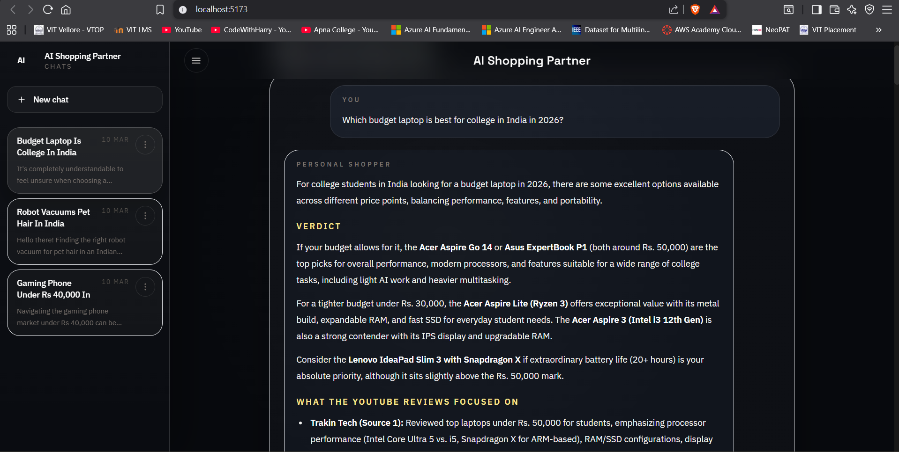
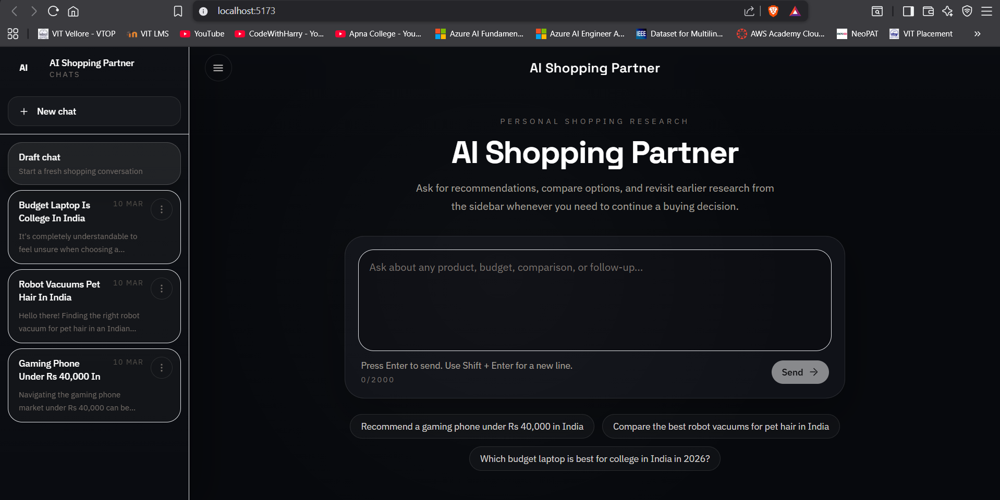

Complete Project Documentation
Agentic AI Personal Shopper
A full-stack AI shopping assistant built with React, Flask, Gemini, and YouTube transcript research, designed to provide conversational product recommendations, comparisons, follow-up answers, and persistent chat history.
Table of Contents
- Project Objective
- Initial Scope and Core Requirements
- Final Project Architecture
- Backend Development Journey
- Frontend Development Journey
- Persistence and Session Management
- Deployment Journey
- Major Problems and Solutions
- Final Feature Set
- End-to-End System Flow
- Final Deployment State
- Known Limitations
- Key Engineering Decisions
- Final Outcome
- Closing Summary
1. Project Objective
The objective of this project was to build a full-stack AI-powered personal shopping assistant with a conversational interface similar to ChatGPT, Gemini, Claude, or Copilot. Instead of acting like a static product catalog, the website needed to behave like an intelligent assistant that could understand natural language shopping requests, research product categories, summarize review evidence, compare alternatives, and answer follow-up questions within the same thread.
The website was required to:
- Accept natural language shopping prompts from users
- Research products using YouTube review videos
- Extract transcripts automatically from those videos
- Synthesize verdicts, pros, cons, and comparisons using Gemini
- Stream answers back to the user in real time
- Save past chats for future reference
- Present the experience through a polished, modern user interface
- Be deployable publicly and function as a real web product
| Layer | Technology Chosen | Reason |
|---|---|---|
| Frontend | React + Vite + Tailwind CSS + react-markdown | Fast UI development, SPA flow, clean styling, markdown rendering |
| Backend | Python Flask | Lightweight REST API, simple SSE streaming, modular server logic |
| LLM | Google Gemini via google-generativeai |
Streaming generation, tool calling, good summarization quality |
| Evidence Source | YouTube reviews + transcripts | Rich qualitative review data without official YouTube Data API keys |
| Deployment | GitHub + Render + Postgres | Simple full-stack deployment with separate frontend and backend services |
2. Initial Scope and Core Requirements
2.1 Backend Requirements
- Use modular Python files:
app.py,agent.py,scraper.py - Expose a Flask API for the frontend
- Build a fast intent router to decide whether fresh YouTube research was needed
- Search top YouTube review videos dynamically
- Extract transcripts in parallel using
ThreadPoolExecutor - Gracefully skip videos where transcript access was disabled or unavailable
- Use SSE to stream Gemini output back to the browser
- Frame the assistant as a friendly, expert personal shopper
2.2 Frontend Requirements
- Build a modern chat-style user interface
- Maintain conversation history on the client side
- Receive streamed assistant output incrementally via SSE
- Show live status messages while the agent performed research
- Render formatted markdown cleanly for readable answers
3. Final Project Architecture
The final project became a cleanly separated full-stack application.
app.py: Flask routes, SSE, session endpoints, cookies, CORSagent.py: Gemini orchestration, system prompt, tool logic, titlesscraper.py: YouTube search, transcript retrieval, parallel processingstorage.py: SQLite/Postgres persistence, ownership filtering
App.jsx: shell, chat state, session loading, SSE handlingSessionSidebar.jsx: saved chats, rename/delete, collapse/drawerPromptComposer.jsx: input, send behavior, stop stateChatBubble.jsx: formatted answers, source chips, markdown rendering
4. Backend Development Journey
4.1 Flask API and SSE Streaming
The Flask backend was built around a streaming chat endpoint. The route
POST /api/chat accepts a user message, the current conversation
history, and an optional active session ID. It then performs research and
streams response events back as SSE packets.
The backend emits structured events such as:
sessionfor session metadatastatusfor live progress updatessourcesfor YouTube evidence linkschunkfor incremental response textdonewhen generation finisheserrorif generation fails
4.2 Gemini Integration
Initial State
Gemini was initially used as the synthesis engine for transcript-backed shopping recommendations, with streaming enabled for better user experience.
Model Compatibility Fixes
During implementation, several Gemini model issues were encountered:
- older model names such as
gemini-1.5-flashwere not always available - free-tier quota was exhausted quickly on public usage
- SDK-specific function-calling restrictions required careful configuration
To solve this, the backend added candidate model fallback logic, quota-aware fallback behavior, and more resilient error handling.
Function Calling and Hybrid Routing
Initially, the backend over-fetched YouTube research for almost every prompt. That was improved in two stages:
- Gemini native tool calling was introduced via a YouTube research tool wrapper.
- A later hybrid optimization bypassed the tool-decision step for clearly fresh shopping prompts to reduce latency.
The final system uses a hybrid approach: obvious new research requests fast-path into YouTube lookup, while more ambiguous or follow-up queries can still use Gemini’s tool selection behavior.
4.3 YouTube Search and Transcript Retrieval
The project intentionally stayed focused on YouTube review evidence. The scraper layer handles query normalization, India-aware search phrasing, current-year enrichment, candidate deduplication, and multiple transcript retrieval fallbacks.
- manual captions vs generated captions
- translation fallback to English where available
- skip logic for disabled or missing transcripts
- clean transcript truncation for Gemini efficiency
4.4 Parallel Transcript Extraction
Transcript extraction was built using ThreadPoolExecutor, allowing
multiple candidate videos to be processed in parallel. This reduced latency and made
the research stage more robust when some videos failed.
4.5 Research Cache
To avoid repeated work and reduce load on both YouTube retrieval and Gemini, a short-lived in-memory research cache was added. Similar prompts can reuse recent transcript-backed research instead of fetching from scratch every time.
4.6 Smarter Shopping Output
The assistant prompt was refined over time so the output became:
- India-first and INR-aware
- more specific about product models
- less generic and less brand-only
- better grounded in actual review evidence
- more concise and buyer-friendly
Ambiguous prompts such as watches under 5000 were specifically improved
so the model could clarify when needed rather than returning vague brand suggestions.
5. Frontend Development Journey
5.1 Initial Chat Interface
The frontend started as a straightforward chat interface with user and assistant bubbles, a prompt input, markdown rendering, and streamed output. Over time, it was refined into a more product-grade interface.
5.2 Streaming Support
The frontend was built to consume Flask SSE streams incrementally. This included:
- reading streamed chunks from the response body
- parsing structured SSE events
- updating assistant text chunk by chunk
- showing source links separately
- handling completion and failure cleanly
5.3 UI Modernization
The interface was redesigned multiple times to reduce clutter and better match modern AI assistant websites. The final interface includes:
- dark visual theme
- centered landing state
- minimal top bar
- collapsible desktop sidebar
- mobile sidebar drawer
- clean message hierarchy and prompt composer
5.4 Better Interaction Design
- Enter sends prompts
- Shift+Enter inserts a new line
- status text updates during research and drafting
- source chips display linked YouTube evidence
- the app title returns users to the home state
- redundant toggles and duplicate controls were removed
5.5 Session Sidebar
A saved-chat sidebar was added so users could revisit earlier conversations. This evolved into a full session workspace with active state, previews, collapse support, mobile drawer support, and sidebar persistence behavior.
5.6 Rename and Delete
Each session received a three-dot menu with rename and delete actions, making the saved-chat experience feel closer to ChatGPT or Gemini-style interfaces.
5.7 Navigation Cleanup
The top header and sidebar alignment were refined, the first-prompt experience was simplified so the user’s message truly starts the conversation, and the prompt flow was made more minimalistic and professional.
6. Persistence and Session Management
6.1 Local Persistence
The project originally used SQLite locally to store sessions and messages. This gave the application persistent saved chats without requiring a full database service during development.
6.2 Production Persistence
For deployment, the persistence layer was upgraded to support both SQLite and Postgres.
Local development continues to use SQLite, while Render production uses Postgres through
DATABASE_URL.
6.3 Privacy Problem and Fix
Once the site became public, all visitors could see the same saved chats. This was a critical privacy issue and required a server-side fix.
The final solution introduced:
- an anonymous secure browser cookie per visitor
owner_idtracking on sessions- ownership filtering for session list, load, rename, and delete
The result is browser-scoped privacy: different visitors no longer see each other’s chat histories, while the same browser still retains its own saved sessions.
7. Deployment Journey
7.1 Git and GitHub
The project was initialized as a Git repository and published to GitHub so the codebase could be versioned, pushed incrementally, and deployed through Render.
7.2 Why Render Was Chosen
Render was selected over Vercel because the backend is a normal Flask web service with SSE streaming and persistent database needs. This architecture maps naturally to Render’s web service model and managed Postgres support.
7.3 Render Blueprint
Deployment was automated through render.yaml, which provisions the Flask
backend service, the static frontend service, and the Render Postgres database.
It also auto-wires:
- frontend API URL from the backend
- backend CORS origin from the frontend
- backend database connection from Postgres
7.4 Live Deployment
The final system was successfully deployed publicly with:
- frontend static site on Render
- backend Flask API on Render
- production Postgres database on Render
8. Major Problems Encountered and How They Were Solved
8.1 PowerShell Execution Policy
Problem: PowerShell blocked virtual environment activation and npm script execution.
Solution: Used direct .venv\Scripts\python and npm.cmd commands instead of relying on shell activation.
8.2 Python Dependency Compatibility
Problem: Older transcript API versions did not support the installed Python version.
Solution: Upgraded to a compatible youtube-transcript-api release.
8.3 YouTube Search Breakage
Problem: youtube-search-python broke because of an httpx compatibility problem.
Solution: Pinned a compatible httpx version.
8.4 Gemini Model Availability
Problem: Older configured model names were unavailable for the SDK/API path.
Solution: Added model fallback logic and updated default model candidates.
8.5 Function Calling Configuration Error
Problem: Gemini rejected an invalid tool configuration involving allowed function names and mode alignment.
Solution: Corrected tool-calling configuration to match SDK expectations.
8.6 Public Chat Leakage
Problem: Different visitors could see the same saved chats after deployment.
Solution: Added cookie-based viewer ownership and server-side filtering by owner_id.
8.7 Generic Shopping Answers
Problem: Prompts like watches under 5000 produced broad brand-level recommendations.
Solution: Strengthened prompt policy, improved shopping heuristics, and encouraged clarification for ambiguous categories.
8.8 Slow Responses
Problem: Research prompts felt slow because of cold starts, multiple Gemini calls, and large transcript payloads.
Solution: Introduced hybrid fast-path routing, transcript optimization, candidate tuning, and a short-lived research cache.
8.9 Vague Auto-Titles
Problem: Chat titles were too generic.
Solution: Improved title heuristics, better title prompts, comparison-aware titles, and a single smart update after the first answer.
8.10 Gemini Free-Tier Quota Limits
Problem: Public usage quickly exhausted Gemini free-tier quota.
Solution: Added model fallbacks, quota-aware behavior, and made the request flow more efficient. This remains an external free-tier limitation.
9. Final Feature Set
| Category | Final Delivered Features |
|---|---|
| Core AI | Conversational shopping assistant, Gemini synthesis, transcript-backed reasoning, follow-up support, India-focused recommendations |
| YouTube Research | Search without official YouTube Data API keys, transcript fallback retrieval, source deduplication, parallel extraction |
| Streaming UX | SSE streaming, live status text, chunk-by-chunk rendering, source chips |
| Saved Chats | Session list, session load, rename, delete, auto-titling, session persistence |
| Privacy | Browser-scoped chat isolation, no shared public chat history |
| UI | Dark theme, collapsible sidebar, responsive layout, centered landing page, prompt composer, home navigation |
| Deployment | GitHub repo, Render frontend, Render backend, Render Postgres, blueprint-based deployment |
10. How the Final System Works End to End
- A user opens the website.
- The browser receives or reuses a secure anonymous viewer cookie.
- The user submits a shopping prompt.
- The frontend sends the prompt, history, and session ID to the backend.
- The backend determines whether fresh YouTube research is needed.
- If research is required, YouTube queries are derived and candidate videos are fetched.
- Video transcripts are extracted in parallel using
ThreadPoolExecutor. - Gemini synthesizes the answer from research context and existing chat history.
- Flask streams status events, sources, and text chunks back over SSE.
- The frontend renders the answer live and displays source chips.
- The conversation is saved into the database.
- After the first assistant answer, the system generates one smart session title in the background.
- The saved chat remains visible only to that browser owner.
11. Final Deployment State
The final deployed system consists of:
- GitHub-hosted source repository
- Render static frontend
- Render Flask backend API
- Render Postgres database
The site is publicly accessible while still preserving browser-private chat history. Backend-only changes can redeploy independently from frontend changes depending on which service was modified.
12. Known Limitations
- No account-based cross-device sync because authentication was intentionally excluded.
- Gemini free-tier quota can be exceeded on a public deployment.
- Free Render can still introduce cold starts for the backend.
- The evidence layer intentionally focuses on YouTube reviews only.
- Retailer pricing is approximate rather than live-scraped.
13. Key Engineering Decisions
- Use YouTube reviews as the evidence layer instead of retailer APIs.
- Use parallel transcript extraction for practical latency.
- Use SSE for a modern live-generation user experience.
- Keep the backend modular across routing, agent logic, retrieval, and storage.
- Move production persistence from SQLite to Postgres.
- Use anonymous browser ownership instead of authentication.
- Adopt a hybrid research-routing approach to balance intelligence and speed.
14. Final Outcome
The final result is a deployable, modular, full-stack AI shopping website that behaves like a modern conversational assistant. It uses real YouTube review evidence, streams responses in real time, saves conversations for later use, preserves privacy per browser, supports follow-up shopping queries, and is deployed publicly on Render.
The project went beyond a basic prototype and matured into a practical AI product through repeated refinement across frontend UX, backend orchestration, LLM behavior, evidence retrieval, persistence, privacy, and deployment engineering.
15. Closing Summary
This project began as a requirement to build a conversational AI personal shopper and evolved into a production-style full-stack web application. The final system combines a React frontend, Flask backend, Gemini-powered synthesis, YouTube transcript-based research, SSE streaming, saved chat sessions, rename/delete session management, browser-private chat visibility, auto-titling, GitHub version control, and Render deployment backed by Postgres.
Along the way, the project solved real engineering problems such as dependency mismatches, model availability issues, public chat leakage, generic product suggestions, latency, UI clutter, deployment friction, and free-tier LLM quota constraints. The finished result is a polished AI shopping assistant with strong end-to-end engineering depth.
Appendix A. Project Screens

Landing-state prompt interface used to start a new shopping conversation.

Live conversation workspace with saved chats, active thread, and streaming assistant layout.